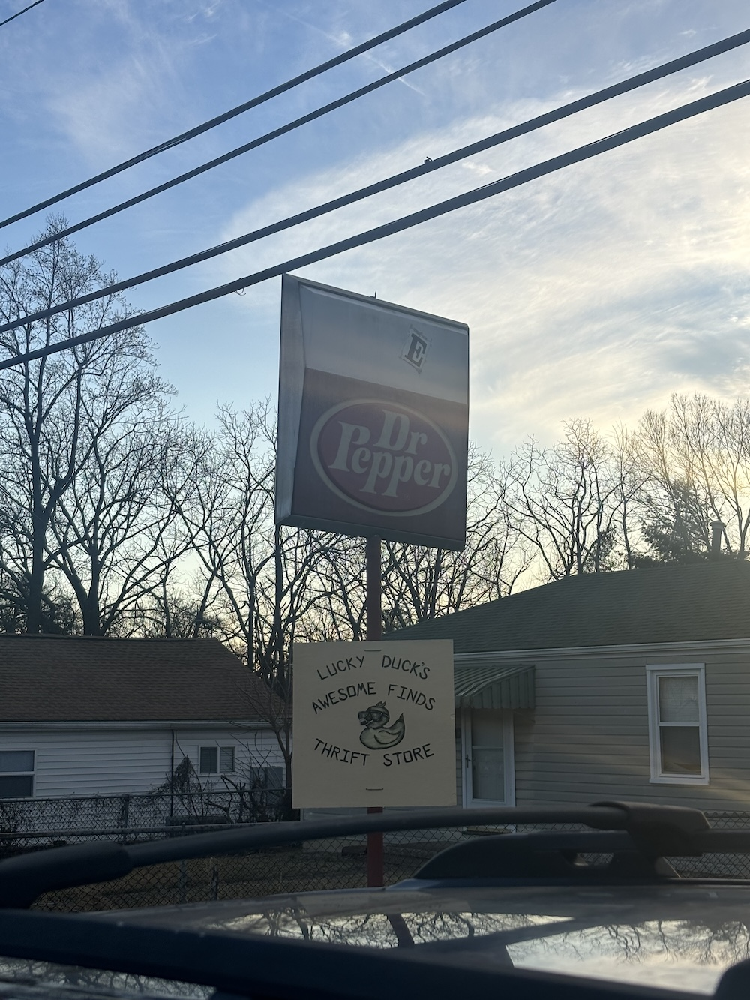
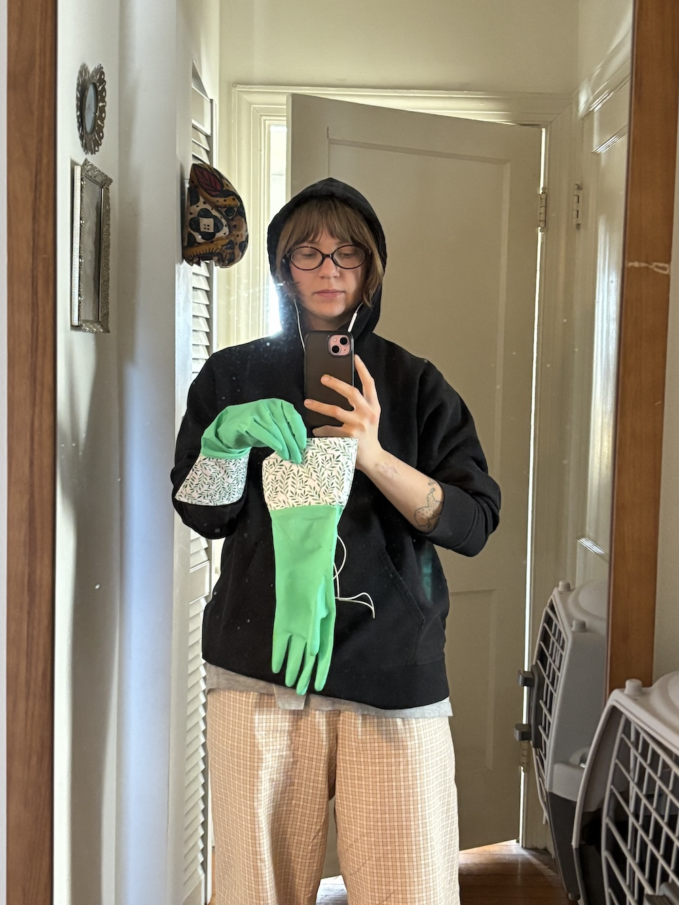
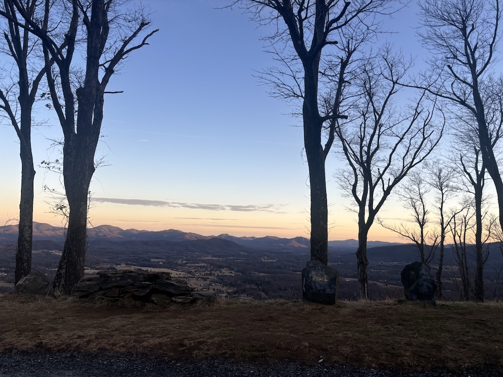
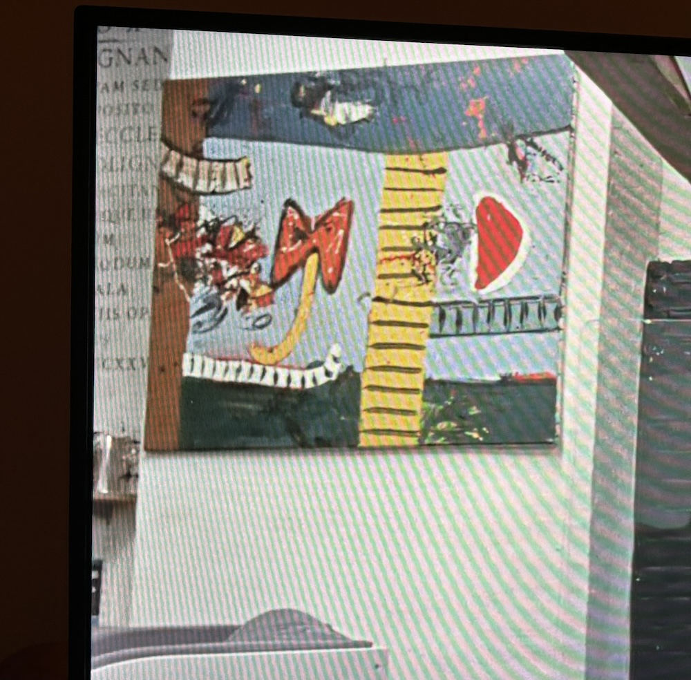
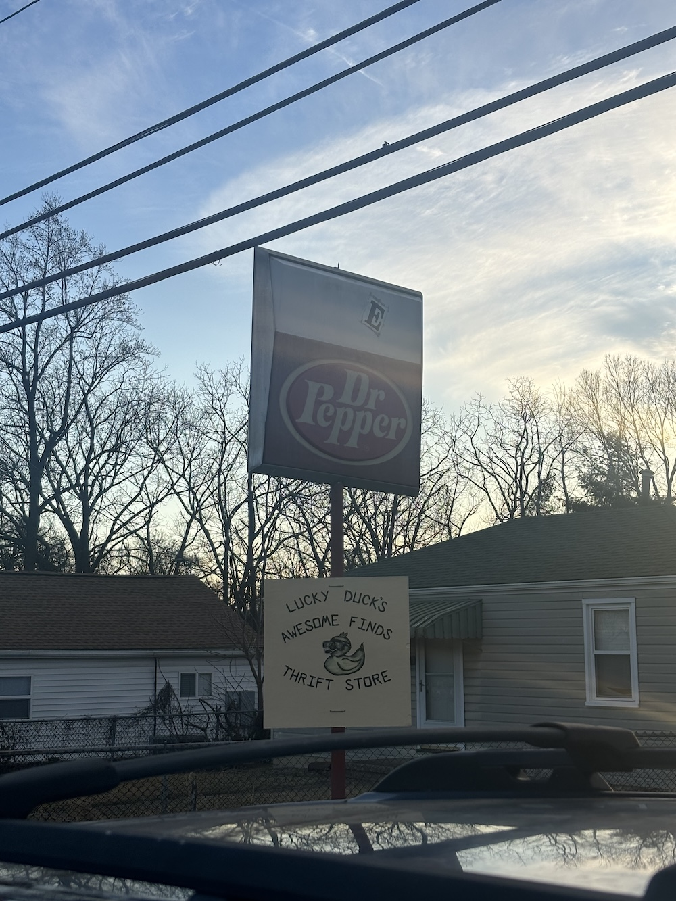
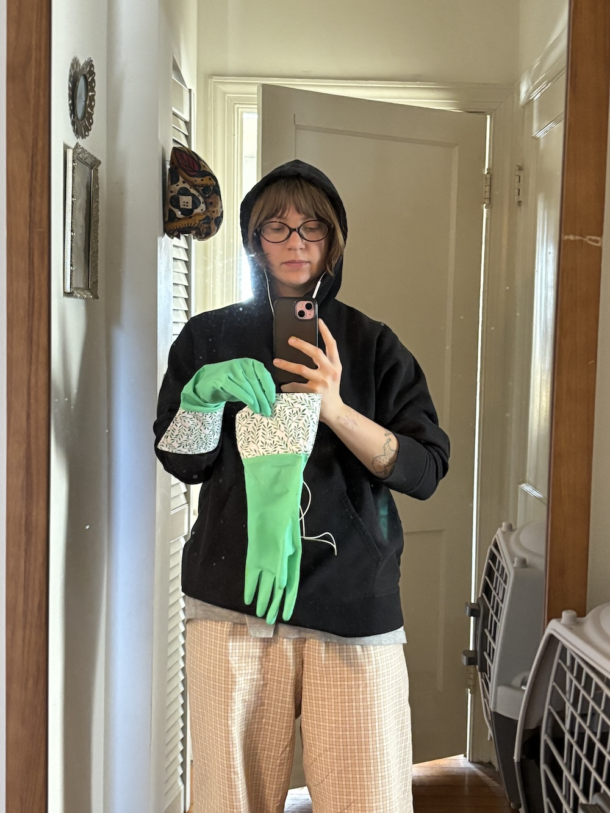
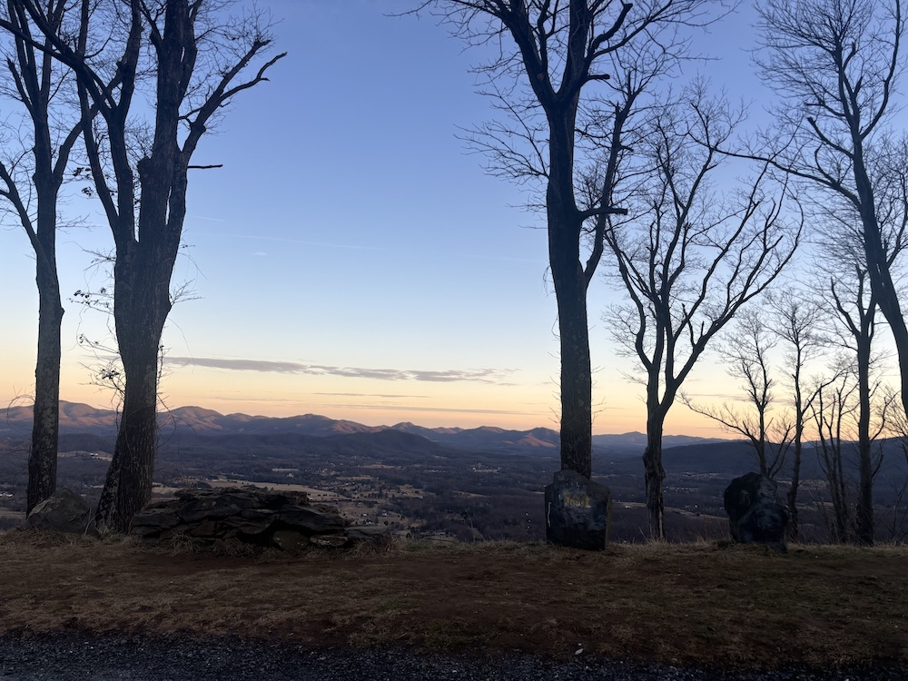
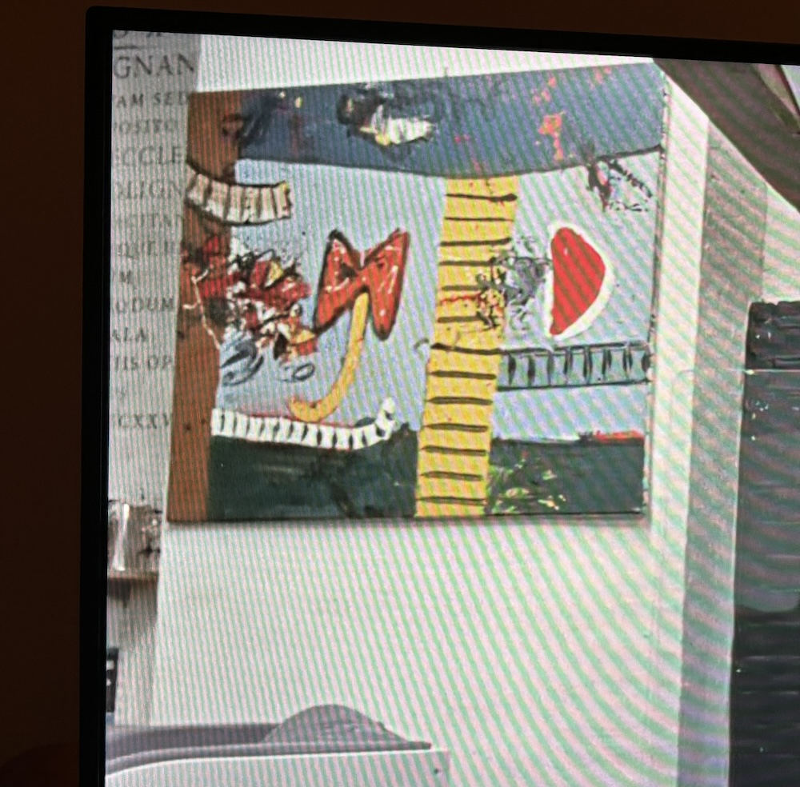

February 2026
 







"Learning is hard work, but everything you learn is yours and will make further learning easier."
[this is something i constantly need to remind myself. i've had this belief for years that's difficult to shake, that i've reached the end of
my ability to learn anything new. i wonder how the world would open to me if i could get myself to feel differently.]
WHY WOULD I?
My ear bonked and a bit infected. So anyways. The old man who doesn't talk and his box of returns and rosy cheeks.
The way arranging a sentence can be, is, politcal. Birds singing, sunny today. So I left early, a little apprehensive. A sculpture I'd made.
NO ONE HAS TO KNOW WHAT I'M WORKING ON